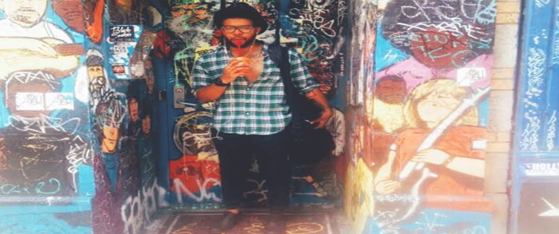

Sometimes the best ideas are born when you least expect it. At least that’s what happened for Shane Vitaly Foran when he went backpacking in Bali. Soul searching, surfing and seeking sanity, he found inspiration in the local artisanal jewelry markets of Bali and the hand crafted expertise of the skilled craftsmen. Foran sought for a way to connect the expertise and style of the jewelry...[read more]
IN ARTS:  For photographer Vonnie Quest, taking pictures was just a gateway from his first love, film. He began shooting four years ago as a practice to help him strengthen his film skills for angling shots and capturing a slice of a moment. Quest grew up as a horror movie fiend, originally wanting to make his own slasher flicks, he took to the streets to begin capturing some beautiful...[read more]
IN MUSIC: Sylvan Esso is the love child of the folk meets electronic duo Nicholas Sanborn and Amelia Randall Meath. The two met over music and a dance floor, and what was supposed be a musical one night stand became a match made in heaven. Sanborn formerly of Megafaun, remixed “Play it Right,” Meath’s song with her former band Mountain Man. With Meath’s breathy vocals...[read more]
IN FASHION: A self described “cultural ambassador,” Wale Oyejide, is the Nigerian designer behind the men’s fashion brand Ikire Jones. The line has taken heritage to a whole nother level using traditional Italian design elements and infusing them with African inspired prints and colors. Dressed to impress is an understatement. These clothes are a nod to old school dapper style...[read more]
IN REVIEWS: When it comes to St. Patrick’s Day weekend, the city of Chicago is like a drunken apocalypse. And, the one neighborhood where all the drunken revelers congregate is of course, Wrigleyville, where Of Montreal performed at Metro on this bacchanalian holiday. I found myself walking into the Metro doors on that animated Friday night...[read more]
Nick Sanborn and Amelia Meath, the duo that makes up the electro folk duo, Sylvan Esso, have a certain cosmic connection, and there was something magical about their performance at Metro Chicago this Saturday. Categorizing them to simply electro-folk, is an understatement. Throw in a little pop, hip-hop sprinkled with a lil R&B and you might graze the surface...[read more]
There is something captivating about the UK songstress FKA Twigs. Perhaps it is the quiet seductive charm that she exudes, the way she makes love to the mic with her breathy vocals, her artistic take on the modern sounds of R&B, or all of the above. With all that being said and true, she had the crowd at Metro Chicago completely under...[read more]